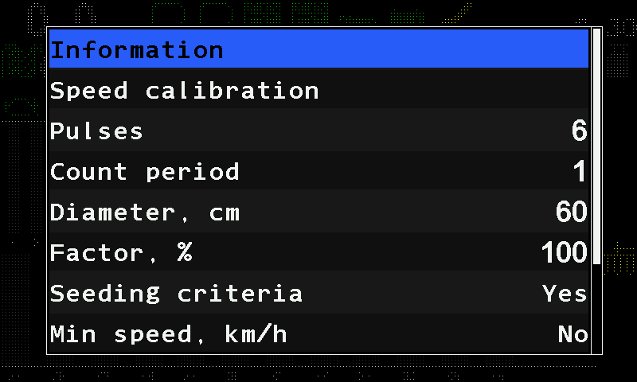

Capteur de vitesse d'avancement
Les paramètres du capteur de vitesse d'avancement — impulsions, diamètre de roue, facteur, limites de vitesse, simulation, récepteur GPS intégré — et ce que fait de lui-même le réglage de la simulation.
Tout ce que le panneau compte — surface, doses, écarts — est calculé à partir de la distance parcourue. Un capteur de vitesse qui se trompe d'un dixième fausse d'un dixième tous les autres chiffres du panneau. Réglez d'abord ses paramètres, puis étalonnez-le (Étalonner le capteur de vitesse).
Maintenez le doigt sur le champ de vitesse de l'écran d'accueil pour ouvrir le menu contextuel du capteur de vitesse (Réglages des capteurs). Tous ses paramètres exigent le niveau « Agronomist » (Activer le niveau Agronomist). Le menu propose aussi « Speed calibration » (étalonnage de la vitesse) directement, sous « Information », machine à l'arrêt.

| Paramètre | Ce qu'il fait | Plage, défaut |
|---|---|---|
| « Pulses » | Le nombre d'impulsions que le capteur donne par tour de roue (impulsions). | 1 … 1000 ; 6 |
| « Count period » | Le nombre d'impulsions sur lequel le panneau fait la moyenne avant de recalculer la vitesse ; un changement brusque de vitesse est pris en compte aussitôt (période de comptage). Masqué quand le capteur est sur un appareil d'entrée. | 1 … 1000 ; 1 |
| « Diameter, cm » | Le diamètre de la roue. | 10 … 200 ; 60 |
| « Factor, % » | Une correction de la distance par tour de roue : le panneau compte la circonférence de la roue multipliée par ce facteur. 100 prend la circonférence telle quelle. L'étalonnage de la vitesse le réécrit. Pavé numérique. | 1 … 10000 ; 100 |
| « Seeding criteria » | « Yes » — les alarmes de section ne sont surveillées que machine en mouvement ; « No » — aussi à l'arrêt (critère de semis). Masqué, et toujours sur « Yes », en mode « Precise » et sur une machine à moteurs de doseur ou à pompe. | « No » / « Yes » ; « Yes » |
| « Min speed, km/h » | Sous cette vitesse, l'écran d'accueil affiche « FASTER » (plus vite). « No » (0) désactive le contrôle. | 0 … 99 ; « No » |
| « Max speed, km/h » | Au-dessus de cette vitesse, l'écran d'accueil affiche « SLOWER » (plus lentement). « No » (0) désactive le contrôle. | 0 … 99 ; « No » |
| « Imitation, km/h » | Une vitesse simulée (simulation). « No » (0) — le vrai capteur est utilisé. | 0 … 20 ; « No » |
| « GPS » | Prendre la vitesse d'un récepteur externe. Affiché seulement quand il y en a un en service. | « No » / « Yes » |
| « Width, cm » | La voie entre les deux roues d'une installation à deux capteurs (largeur). Affiché seulement avec « Input device (2) » dans le profil. | 0 … 10000 ; 280 |
| « GPS internal » | Prendre la vitesse du récepteur intégré au panneau (GPS interne). | « No » / « Yes » ; « No » |
Le minimum doit être inférieur au maximum, sinon le panneau déclenche « Error in settings of Min/Max » (erreur dans les réglages Min/Max) (Alarmes du capteur de vitesse). Avec « GPS internal » activé, le symbole de satellite de l'écran d'accueil montre la réception, et moins de quatre satellites déclenchent « Poor GPS signal quality » (mauvaise qualité du signal GPS) — voir GPS.
La vitesse simulée est aussi maintenue dans la plage que permet le dosage : une valeur hors plage est ramenée à la limite la plus proche au moment où vous la réglez. Tant que la vitesse est simulée, l'écran d'état du capteur affiche « IMITATION » en jaune. Travailler sans capteur de vitesse : Travailler sans capteur de vitesse.
L'écran d'état
L'écran d'état montre la fréquence des impulsions F= en Hz (avec deux capteurs, F1= et F2=) et les deux limites en vigueur. Voir L'écran d'état d'un capteur.
Votre machine fait quelque chose que cette page n'explique pas ? Écrivez à support@agriwelt.com — un ingénieur vous répond.